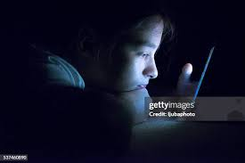

Sobre o Bullying Fisíco: O bullying físico é uma forma de agressão em que a vítima é diretamente atacada por meio de violência corporal. Isso pode incluir empurrões, socos, chutes, estrangulamentos, dano a objetos pessoais ou qualquer outro tipo de agressão física. O objetivo do bullying físico é geralmente intimidar, ferir ou humilhar a pessoa.
Bullying Verbal:
Sobre o Bullying Verbal: O bullying verbal é um tipo de agressão emocional que envolve o uso de palavras para insultar, humilhar, ameaçar ou fazer piadas ofensivas sobre alguém. Esse comportamento pode incluir xingamentos, provocações, difamação, zombarias ou críticas destrutivas. Ao contrário do bullying físico, o bullying verbal não causa danos visíveis, mas pode afetar profundamente a autoestima e a saúde mental da vítima, levando a sentimentos de tristeza, ansiedade e isolamento.
Bullying Psicológico:
Sobre o Bullying Psicológico: O bullying psicológico, também conhecido como bullying emocional, envolve o uso de manipulação mental e manipulação emocional para prejudicar outra pessoa. Ao contrário do bullying físico, o bullying psicológico não deixa marcas visíveis, mas causa danos profundos ao bem-estar emocional e mental da vítima. Pode incluir atitudes como:
Isolamento social (excluir a pessoa de grupos ou atividades)
Manipulação emocional (fazer a vítima se sentir culpada ou inferior)
Humilhação constante, com críticas destrutivas
Espalhamento de boatos ou fofocas prejudiciais
Ameaças indiretas que geram medo constante
Esse tipo de bullying pode ser muito prejudicial, afetando a saúde mental das vítimas, levando a distúrbios como ansiedade, depressão, baixa autoestima e, em casos mais graves, pensamentos suicidas.
Cyberbullying :

Sobre o Cyberbullying:
é o ato de intimidar, assediar ou agredir alguém de forma repetitiva através de meios digitais, como redes sociais, mensagens de texto, e-mails ou fóruns online. Ele pode envolver insultos, difamação, exclusão social, ameaças ou até a publicação de informações pessoais sem consentimento.
Efeitos do Bullying
Sociais
Acadêmicos
Físicos
Como Previnir o Bullying
Canais oficiais de denúncia
Ouvidoria: 0800-041-9192
Disque Direitos Humanos: 100
Disque Denúncia: 181
SAMU (Serviço de Atendimento Móvel de Urgência): 193
.jpg)
.jpg)